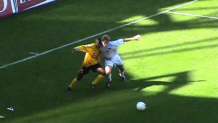

|
Roda JC - AZ (1-1) 19 september 2004 |
Roda JC
- AZ (1-1) 19 september 2004
Op west wordt een spandoek omhoog gehesen voor Arouna Kone.
Uit een reboundsituatie na een vrijetrap krijgt Landzaat de bal voor
de voeten. Zijn harde schot gaat....
... via de linkerpaal het doel in: 0-1 (1').
Een feestje bij de nauwelijks 100 meegereisde
AZ-supporters.
De eerste helft biedt weinig spektakel, maar deze kopkans van
Sergio dwingt doelman Timmer tot een ultieme duik.
Daarbij komt hij in aanraking met de paal wat tot de eerste van een
lange reeks al dan niet vermeende AZ-blessures leidt.
Gerommel in de 16 waar Senden naar de grond lijkt te worden
getrokken. Scheidsrechter Van Dongen ziet er geen strafschop in.
Vicelich neemt een mooie voorzet van Senden aan met de borst en
lepelt de bal over Timmer heen.
Het doelpunt wordt afgekeurd wegens "hands".
Dat levert Vicelich ook nog eens een gele kaart op.
Dit tot woede en ontzetting van het publiek.
Roda krijgt steeds meer greep op de wedstrijd. De ploeg uit Alkmaar
die nog vermoeid lijkt van het UEFA-cuptreffen met PAOK Saloniki,
gaan gemakkelijk liggen.
In de tweede helft wemelt het van de kansen voor Roda, maar de
bal gaat telkens over, naast of.....wordt gestopt door Timmer.
Het "professioneel" tijdrekken door AZ-spelers. Co Adriaanse
zat al
vanaf de 67e min. zonder wisselmogelijkheden.

Onze Ivoriaantjes, Kone en Sekou.
Het aantal corners is niet meer te tellen en de druk van Roda neemt
enorm toe. Hier een kopbal van Cristiano die maar net over gaat.
Kone is onnavolgbaar en houdt hier drie tegenstanders bezig.
Hierdoor komt Filipovich vrij te staan. Als hij de bal van
Arouna
krijgt toegespeeld dringt hij de 16 meter binnen en wordt daar
gevloerd door Elkhattabi. Van Dongen onthoudt Roda een 100%
zekere penalty!
De waardeloze scheidsrechter presteert het zelfs om geel uit
te delen
vanwege een zogenaamde Schwalbe...!

Vanwege het vroege tijdstip (12.30 uur) op zondag moesten veel
mensen dit duel missen.
Bodor speelt correct de bal en wint een duel van Elkhattabi.
De
scheidsrechter ziet er echter een overtreding in.
De bal wordt teruggelegd naar Sergio die vanaf de 16 meter
lijn
keihard uithaalt: 1-1 (79').
De vreugde is enorm! Sonko,
Sergio, Sekou en Kone springen over
de boarding. Eindelijk is de goal gevallen!
De kansen blijven zich opstapelen en de AZ-spelers blijven
omvallen.
In de 4 min. extra tijd moet Kujovic zowaar een keer ver uit
zijn
doel komen om opruiming te houden.
Einde wedstrijd. Roda had met name op basis van de superieure
tweede helft deze wedstrijd moeten winnen.
Roel Brouwers en Arouna Kone kwamen de schaarsbevolkte
Kick Off bezoeken.
Natuurlijk even met hem op de foto voordat hij weggekocht
wordt
door een grote club.
De wedstrijd wordt nabesproken onder het revaliderende oog
van Roel.
Arouna signeert de Schaesberg-vlag.
Een grote eer voor zo'n jonge speler!
Deze gasten zaten al lekker te kanen bij BurgerKing terwijl
wij al
35 minuten op onze Whopper zaten te wachten. Waarom ze dit
"fast-food" noemen is me na heden een compleet raadsel.
Op de terugweg naar de auto vonden we onder de oosttribune
deze
mysterieuze dozen.
In dit Kerkraads café waar pimps, hookers, piraten en maffioso
vrije toegang schijnen te hebben hangt er voor ons keurige lieden
weer eens dat vervelende bordje....